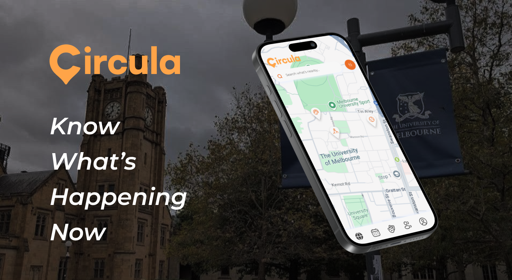
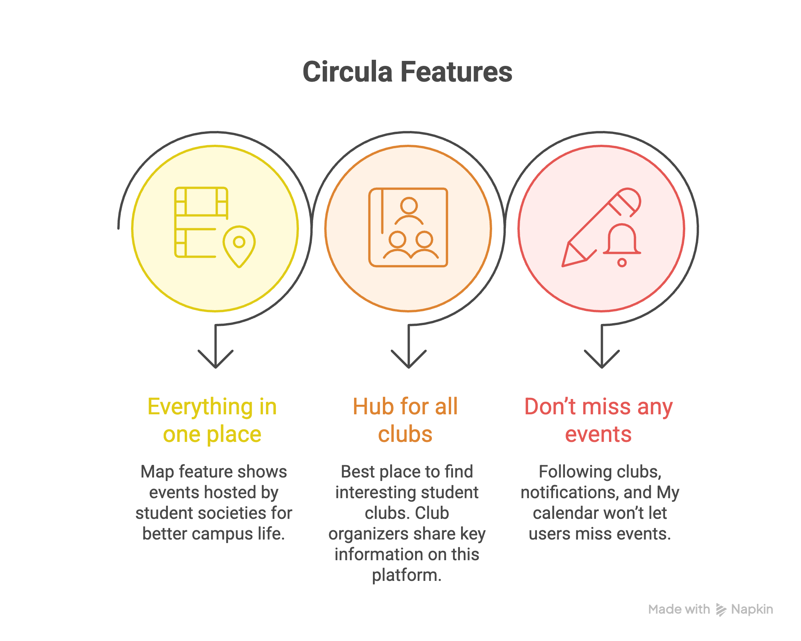
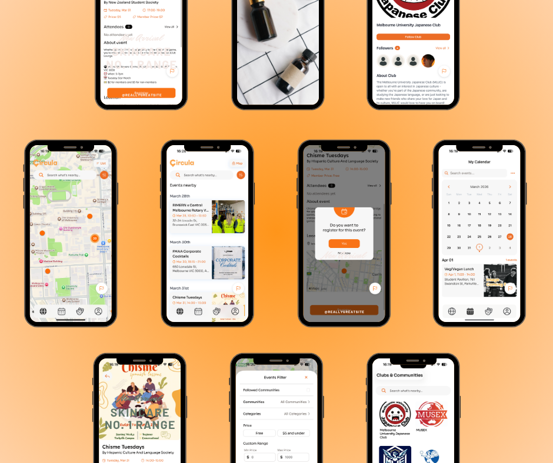

Circulaは、大学内のクラブ活動やイベント情報を一元化し、リアルタイムで可視化するキャンパスマップ体験です。
バラバラなグループチャットや掲示を追いかけなくても、「今、何があるか」を把握し、参加したい機会を見逃さず学内生活を最大化できることを目指しています。
イベントやサークル情報はSNS、メール購読、口コミに分散していて、キャンパスで「今、何が起きているか」を一目で把握しづらい状況でした。団体ごとにチケット取得や登録の手続きも異なり、その摩擦が機会を逃す原因となり、特に一年生や留学生にとって新しいコミュニティに入りにくさにつながっていました。
学生インタビューと観察から、多くの人が「後から知った」経験を共有していました。情報そのものより、発見のしやすさと信頼できる一覧性がボトルネックだと整理しました。
そこでマップ上でこれからのイベントを見せる体験に集中してデザインすることにしました。
クラブ活動とイベントをマップ上に集約し、リアルタイムで状況を把握できるようにすることで、学生が参加したい機会を見逃さず、学内生活を最大化できる体験を目指しています。

地理的な発見と、条件で絞り込む探索の両方に対応できるUIを意識しました。
イベントカード、時間・場所・主催を一貫したパターンで提示し、移動中でも判断しやすくしました。
条件の絞り込みや検索の導線を整理し、どの操作から始めればよいか迷いにくいよう繰り返し調整しました。

マップビューから近くの活動を探し、日時・場所などの詳細を開いて確認し、アプリから登録できるようにする想定です。
リストではこれからのイベントを時系列で表示し、「近日何があるか」を探したいときに並べ替えやフィルターで絞り込めます。詳細や登録の導線はマップビューと同じです。
マップからサークルを探索し、詳細を開いて比較し、気になる団体を保存してあとから見返せる導線を設計しました。
今後のアップデートに向けて、ターゲットユーザー20名以上からフィードバックを継続的に集めています。インタビューや軽いユーザビリティ確認に加え、利用後のアンケートで定性的・定量的な両面から学びを蓄積します。
新機能の方向性を決めるうえで、いま注目しているテーマです。
利用後の簡易アンケートでは、SUS（System Usability Scale／システム使用性尺度）に加え、満足度やタスク成功の自己評価などの定量指標を追跡しています。
提出された10件の回答から、各設問の平均スコア（1＝強く反対〜5＝強く賛成）を可視化しています。
✳はSUSで逆転させる項目（否定的な文）です。グラフの生スコアが低いほど、複雑さ・負担の体感は小さいことを意味します。最後の設問は尺度に加えたフォロー用の追加質問です。